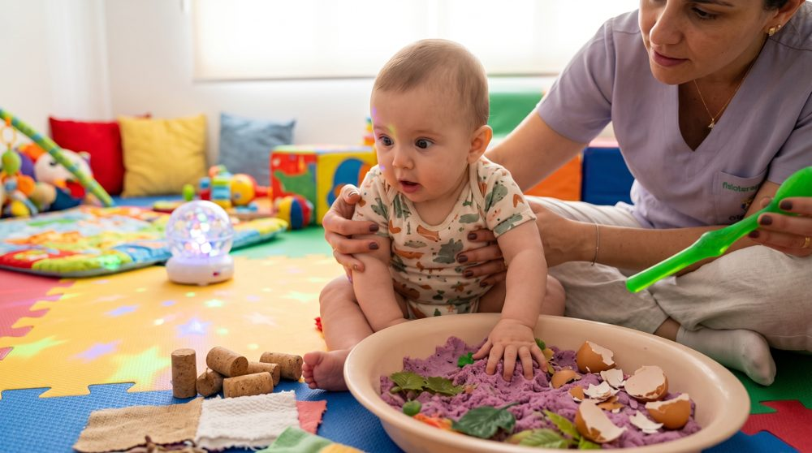
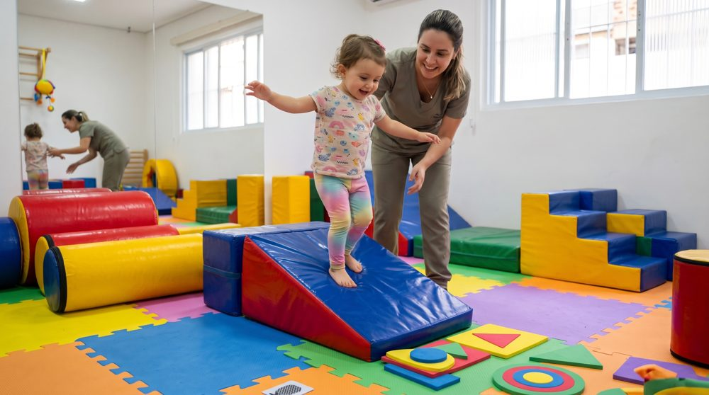
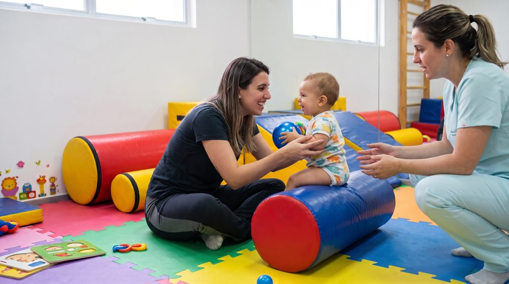
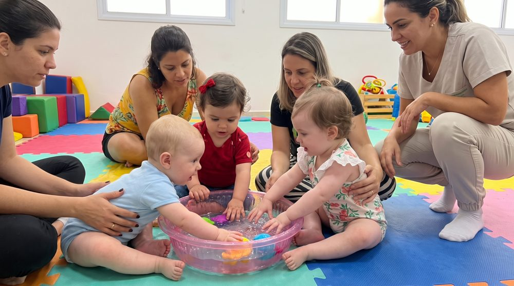

As experiências moldam o cérebro
As conexões cerebrais se formam aos poucos, do mais simples ao mais complexo. O que a criança vive nos primeiros anos ajuda a construir essa arquitetura.
Da gestação aos 2 anos, o cérebro se desenvolve num ritmo que não se repete. O que a criança vive nessa janela importa muito, e todos nós podemos ajudar a aproveitá-la.
A primeira infância vai do nascimento aos 6 anos de idade. Segundo o white paper O impacto do desenvolvimento na primeira infância sobre a aprendizagem, do Núcleo Ciência pela Infância, é nessa fase que o cérebro forma suas estruturas e circuitos e que a criança adquire as capacidades básicas sobre as quais todas as habilidades futuras vão se apoiar.
O documento destaca que a aprendizagem não espera a escola. Muito antes disso, enquanto cresce, a criança aprende nos vínculos afetivos e no ambiente em que vive, em todos os domínios: físico, cognitivo e socioemocional. Crianças com desenvolvimento integral saudável nos primeiros anos tendem a se adaptar melhor a diferentes ambientes e a ter bom desempenho escolar depois.
Vídeo: “O que é Primeira Infância?”, Fundação Maria Cecilia Souto Vidigal (YouTube, 1 min 30 s).
A primeira infância é como construir uma casa: o que a criança vive nessa fase forma as paredes de toda a vida.
Fonte: Comitê Científico do Núcleo Ciência pela Infância, 2014.
Mil dias é a soma de 270 dias de gestação com os dois primeiros anos de vida. Nesse período o cérebro tem enorme plasticidade e responde às intervenções mais rápido do que em qualquer outra fase.
As células cerebrais podem fazer até 1.000.000 de novas conexões neuronais a cada segundo, uma velocidade única na vida. Essas conexões formam a base da aprendizagem e das habilidades emocionais, cognitivas e sociais. Por isso é tão importante estimular a criança nessa fase, em um ambiente acolhedor, com cuidado, afeto e interações frequentes com os adultos que fazem parte da vida dela.
“O desenvolvimento integral na primeira infância é crucial. As experiências ocorridas nessa fase terão influência ao longo de toda a vida do indivíduo.”
A boa notícia: o estímulo certo cabe na rotina da família.
Veja como estimularOs circuitos dos sentidos e da linguagem se formam primeiro. As funções cognitivas superiores, como planejar e raciocinar, se desenvolvem em seguida e por mais tempo. Tudo isso se concentra nos primeiros anos de vida.
Ilustração esquemática, sem escala, redesenhada a partir do gráfico “Formação de novas sinapses” do white paper do Núcleo Ciência pela Infância (2014). Os picos indicam momentos de maior formação de sinapses em cada função.
O Centro de Desenvolvimento da Criança da Universidade de Harvard resume o tema em três conceitos.
As conexões cerebrais se formam aos poucos, do mais simples ao mais complexo. O que a criança vive nos primeiros anos ajuda a construir essa arquitetura.
Quando o bebê faz um gesto, um som ou um balbucio e um adulto responde com atenção, os circuitos do cérebro se fortalecem. É por isso que brincar junto faz diferença.
Estresse intenso e prolongado, sem o apoio de adultos, pode prejudicar o desenvolvimento do cérebro e a saúde ao longo da vida. Presença e acolhimento protegem.
Esse ciclo é exatamente o que a DesenvolVi promove: Explorar, Aprender, Incentivar e Desenvolver, os pilares da nossa proposta.
↻ E o ciclo recomeça, muitas vezes ao dia.
Fonte: Center on the Developing Child, Harvard University — Três conceitos fundamentais sobre o desenvolvimento na primeira infância.
Quando o bebê faz um gesto, um som ou um balbucio e um adulto responde com atenção, os circuitos do cérebro se fortalecem. A ideia é simples: um pouco de cada pilar, todos os dias.

Estímulos sensoriais ampliam a capacidade de absorção de informações.

Habilidades motoras que se conectam com capacidades cognitivas.

Fortalecimento do vínculo com pais e responsáveis.

A interação social que permite aprender com outras crianças.
Boa intenção nem sempre basta. Algumas situações comuns, em casa, podem atrapalhar o desenvolvimento. Veja as principais, além das telas.
Muito tempo em bebê-conforto, carrinho, cadeirinha ou cercadinho tira do bebê a chance de se mexer e explorar. A OMS recomenda, para quem ainda não se move sozinho, pelo menos 30 minutos de bruços por dia (acordado) e não mais de 1 hora seguida contido.
Na prática: Alterne: chão, tapete, bruços e colo. Use carrinho e cadeirinha para o que eles servem.
O andador não traz benefício ao aprendizado do bebê, aumenta o risco de acidentes e pode atrasar o desenvolvimento psicomotor, segundo a SBP. Também pedem atenção peças pequenas, pilhas ao alcance, cordões longos e brinquedos muito barulhentos.
Na prática: Prefira brinquedos simples, da idade certa e com selo do Inmetro. Evite andador.
Bebê muito tempo sozinho, sem conversa, sem colo e sem brincar junto, recebe poucas respostas do adulto. É dessa troca que vêm os estímulos que fortalecem os circuitos do cérebro.
Na prática: Converse, cante, nomeie o que vê e responda aos sons e gestos dele, várias vezes ao dia.
Fontes: OMS/OPAS (2019), diretrizes para menores de 5 anos; Sociedade Brasileira de Pediatria, sobre andadores e brinquedos seguros; Harvard, Center on the Developing Child.
Nessa fase o aprendizado depende do contato presencial com outras pessoas.
De preferência com interação e supervisão de um adulto.
Essas faixas seguem as recomendações da Sociedade Brasileira de Pediatria, citadas no estudo Proteção à primeira infância entre telas e mídias digitais (NCPI, 2025). O estudo também orienta a evitar telas durante as refeições, manter o quarto sem aparelhos para proteger o sono e não usar a tela como “babá eletrônica” nem para acalmar a criança.
A sugestão é trocar o tempo de tela por brincadeiras, atividade física, leitura compartilhada e interação real. Escolher o conteúdo e assistir junto, quando houver tela, também ajuda.
Fonte: Proteção à primeira infância entre telas e mídias digitais, Núcleo Ciência pela Infância, 2025.
Estas dicas são gerais e informativas e não substituem a avaliação de um profissional de saúde.
Meu bebê está se desenvolvendo como esperado? Estou estimulando do jeito certo? Os profissionais da Rede DesenvolVi, especializados em desenvolvimento infantil, orientam você e seu filho a aproveitar essa janela que não volta.
Tempo de qualidade para bebês e crianças junto com seus pais ou responsáveis enquanto realizam atividades que vão promover o seu melhor desenvolvimento sensorial, motor, cognitivo, afetivo e social.
Aulas conduzidas por especialista em desenvolvimento infantil, em um ambiente com recursos adequados, de forma contínua. A psicomotricidade une o desenvolvimento motor e o cognitivo.
Avaliação neuropsicomotora para verificar se o desenvolvimento está de acordo com a faixa etária, identificar sinais de alerta e orientar a família sobre posicionamentos e exercícios que podem entrar na rotina da criança.
Entender a consultoriaUma degustação: venha conhecer o espaço, a profissional e a dinâmica das aulas com o seu filho, sem compromisso, antes de decidir pela turma regular.
Escolha sua cidade, tire suas dúvidas e agende a aula experimental.
Na aula experimental, conheça o espaço, a especialista e veja seu filho explorar.
Siga com a turma regular ou com a consultoria especializada.
Uma rede de profissionais conectados ao mesmo propósito: cuidar do desenvolvimento nos primeiros anos de vida. Se você atua com bebês, crianças e famílias na sua cidade, vamos conversar.
Sim. A proposta é tempo de qualidade da criança junto com seus pais ou responsáveis, o que também fortalece o vínculo afetivo.
São aulas em turmas, conduzidas por especialista em desenvolvimento infantil, com o objetivo de promover os quatro pilares: incentivo sensorial, psicomotricidade, vínculo afetivo e socialização. Fale com a unidade da sua cidade para saber turmas, dias e horários.
É uma degustação para conhecer o espaço, a profissional e a dinâmica das aulas antes de decidir pela turma regular.
O foco é a primeira infância, que vai da concepção aos 6 anos, com ênfase nos primeiros 1.000 dias. Fale com a unidade da sua cidade para saber as turmas disponíveis.
É uma avaliação neuropsicomotora que verifica o desenvolvimento da criança para a idade dela, identifica sinais de alerta e orienta a família sobre exercícios e posicionamentos para a rotina.
A rede está em expansão. Se você é profissional, conheça a seção “Seja parceiro”. Se é família, fale com a unidade mais próxima para saber das novidades.
Escolha a sua cidade e converse com a equipe da unidade pelo WhatsApp.